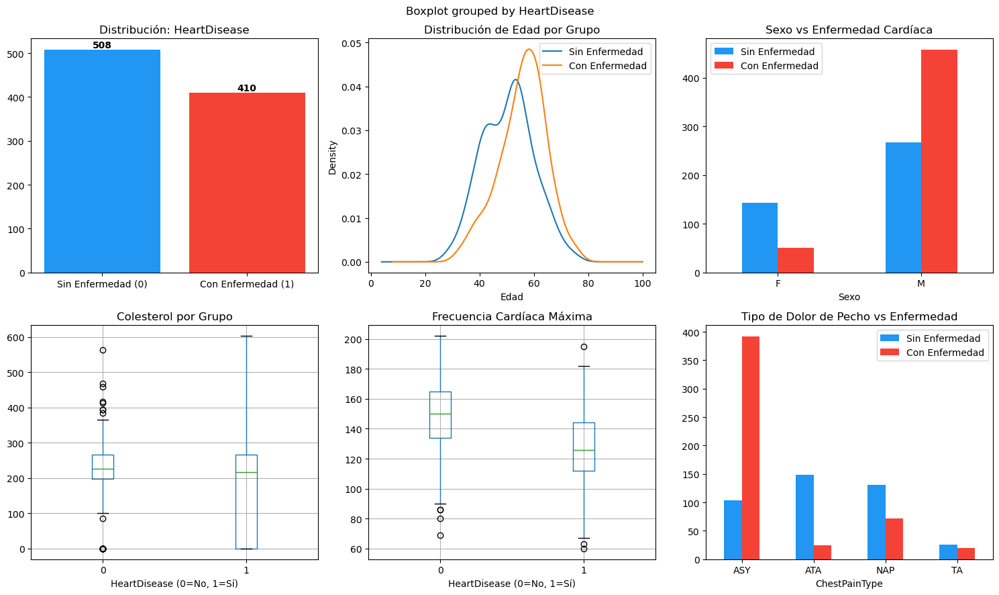
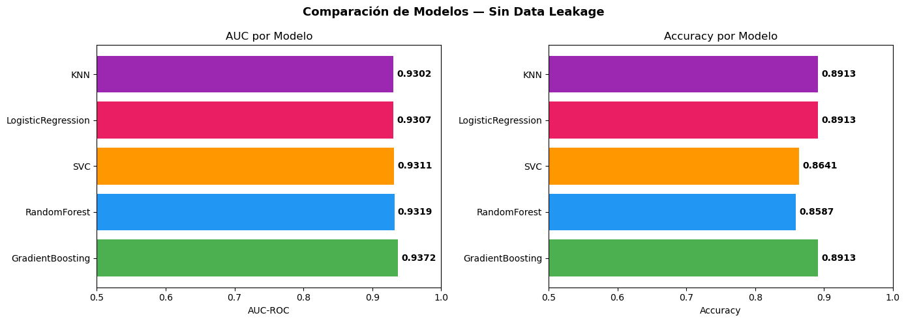

Etapa 1 — Preprocesamiento y Detección de Data Leakage#
Dataset: Heart Failure Prediction (918 pacientes, 12 columnas)
Objetivo: Clasificación binaria — predecir si un paciente tiene enfermedad cardíaca (HeartDisease = 1) o no (HeartDisease = 0)
import pandas as pd
import numpy as np
import matplotlib.pyplot as plt
import seaborn as sns
from sklearn.model_selection import train_test_split, GridSearchCV
from sklearn.svm import SVC
from sklearn.linear_model import LogisticRegression
from sklearn.ensemble import RandomForestClassifier, GradientBoostingClassifier
from sklearn.neighbors import KNeighborsClassifier
from sklearn.preprocessing import MinMaxScaler
from sklearn.pipeline import Pipeline
from sklearn.metrics import roc_auc_score, accuracy_score
import warnings
warnings.filterwarnings('ignore')
print('Librerías cargadas ✓')
Librerías cargadas ✓
1. Carga y Exploración del Dataset#
df = pd.read_csv('../heart.csv')
print(f'Dimensiones: {df.shape}')
print(f'Columnas: {df.columns.tolist()}')
df.head()
Dimensiones: (918, 12)
Columnas: ['Age', 'Sex', 'ChestPainType', 'RestingBP', 'Cholesterol', 'FastingBS', 'RestingECG', 'MaxHR', 'ExerciseAngina', 'Oldpeak', 'ST_Slope', 'HeartDisease']
| Age | Sex | ChestPainType | RestingBP | Cholesterol | FastingBS | RestingECG | MaxHR | ExerciseAngina | Oldpeak | ST_Slope | HeartDisease | |
|---|---|---|---|---|---|---|---|---|---|---|---|---|
| 0 | 40 | M | ATA | 140 | 289 | 0 | Normal | 172 | N | 0.0 | Up | 0 |
| 1 | 49 | F | NAP | 160 | 180 | 0 | Normal | 156 | N | 1.0 | Flat | 1 |
| 2 | 37 | M | ATA | 130 | 283 | 0 | ST | 98 | N | 0.0 | Up | 0 |
| 3 | 48 | F | ASY | 138 | 214 | 0 | Normal | 108 | Y | 1.5 | Flat | 1 |
| 4 | 54 | M | NAP | 150 | 195 | 0 | Normal | 122 | N | 0.0 | Up | 0 |
print('=== INFORMACIÓN GENERAL ===')
print(df.info())
print('\n=== ESTADÍSTICAS DESCRIPTIVAS ===')
df.describe()
=== INFORMACIÓN GENERAL ===
<class 'pandas.core.frame.DataFrame'>
RangeIndex: 918 entries, 0 to 917
Data columns (total 12 columns):
# Column Non-Null Count Dtype
--- ------ -------------- -----
0 Age 918 non-null int64
1 Sex 918 non-null object
2 ChestPainType 918 non-null object
3 RestingBP 918 non-null int64
4 Cholesterol 918 non-null int64
5 FastingBS 918 non-null int64
6 RestingECG 918 non-null object
7 MaxHR 918 non-null int64
8 ExerciseAngina 918 non-null object
9 Oldpeak 918 non-null float64
10 ST_Slope 918 non-null object
11 HeartDisease 918 non-null int64
dtypes: float64(1), int64(6), object(5)
memory usage: 86.2+ KB
None
=== ESTADÍSTICAS DESCRIPTIVAS ===
| Age | RestingBP | Cholesterol | FastingBS | MaxHR | Oldpeak | HeartDisease | |
|---|---|---|---|---|---|---|---|
| count | 918.000000 | 918.000000 | 918.000000 | 918.000000 | 918.000000 | 918.000000 | 918.000000 |
| mean | 53.510893 | 132.396514 | 198.799564 | 0.233115 | 136.809368 | 0.887364 | 0.553377 |
| std | 9.432617 | 18.514154 | 109.384145 | 0.423046 | 25.460334 | 1.066570 | 0.497414 |
| min | 28.000000 | 0.000000 | 0.000000 | 0.000000 | 60.000000 | -2.600000 | 0.000000 |
| 25% | 47.000000 | 120.000000 | 173.250000 | 0.000000 | 120.000000 | 0.000000 | 0.000000 |
| 50% | 54.000000 | 130.000000 | 223.000000 | 0.000000 | 138.000000 | 0.600000 | 1.000000 |
| 75% | 60.000000 | 140.000000 | 267.000000 | 0.000000 | 156.000000 | 1.500000 | 1.000000 |
| max | 77.000000 | 200.000000 | 603.000000 | 1.000000 | 202.000000 | 6.200000 | 1.000000 |
print('=== VALORES NULOS ===')
print(df.isnull().sum())
print('\n=== DISTRIBUCIÓN DE LA VARIABLE OBJETIVO ===')
print(df['HeartDisease'].value_counts())
print(f'Porcentaje con enfermedad: {df["HeartDisease"].mean()*100:.1f}%')
=== VALORES NULOS ===
Age 0
Sex 0
ChestPainType 0
RestingBP 0
Cholesterol 0
FastingBS 0
RestingECG 0
MaxHR 0
ExerciseAngina 0
Oldpeak 0
ST_Slope 0
HeartDisease 0
dtype: int64
=== DISTRIBUCIÓN DE LA VARIABLE OBJETIVO ===
HeartDisease
1 508
0 410
Name: count, dtype: int64
Porcentaje con enfermedad: 55.3%
fig, axes = plt.subplots(2, 3, figsize=(15, 9))
fig.suptitle('Análisis Exploratorio — Heart Disease Dataset', fontsize=14, fontweight='bold')
# 1. Distribución variable objetivo
counts = df['HeartDisease'].value_counts()
axes[0,0].bar(['Sin Enfermedad (0)', 'Con Enfermedad (1)'], counts.values, color=['#2196F3','#F44336'])
axes[0,0].set_title('Distribución: HeartDisease')
for i, v in enumerate(counts.values):
axes[0,0].text(i, v + 5, str(v), ha='center', fontweight='bold')
# 2. Edad por grupo
df.groupby('HeartDisease')['Age'].plot(kind='kde', ax=axes[0,1], legend=True)
axes[0,1].set_title('Distribución de Edad por Grupo')
axes[0,1].set_xlabel('Edad')
axes[0,1].legend(['Sin Enfermedad', 'Con Enfermedad'])
# 3. Sexo vs HeartDisease
pd.crosstab(df['Sex'], df['HeartDisease']).plot(kind='bar', ax=axes[0,2], color=['#2196F3','#F44336'])
axes[0,2].set_title('Sexo vs Enfermedad Cardíaca')
axes[0,2].set_xlabel('Sexo')
axes[0,2].legend(['Sin Enfermedad', 'Con Enfermedad'])
axes[0,2].tick_params(rotation=0)
# 4. Colesterol
df.boxplot(column='Cholesterol', by='HeartDisease', ax=axes[1,0])
axes[1,0].set_title('Colesterol por Grupo')
axes[1,0].set_xlabel('HeartDisease (0=No, 1=Sí)')
# 5. MaxHR
df.boxplot(column='MaxHR', by='HeartDisease', ax=axes[1,1])
axes[1,1].set_title('Frecuencia Cardíaca Máxima')
axes[1,1].set_xlabel('HeartDisease (0=No, 1=Sí)')
# 6. Tipo de dolor de pecho
pd.crosstab(df['ChestPainType'], df['HeartDisease']).plot(kind='bar', ax=axes[1,2], color=['#2196F3','#F44336'])
axes[1,2].set_title('Tipo de Dolor de Pecho vs Enfermedad')
axes[1,2].tick_params(rotation=0)
axes[1,2].legend(['Sin Enfermedad', 'Con Enfermedad'])
plt.tight_layout()
plt.savefig('../exploratory_analysis.png', dpi=150, bbox_inches='tight')
plt.show()
print('Gráfico guardado: exploratory_analysis.png ✓')

Gráfico guardado: exploratory_analysis.png ✓
2. Preprocesamiento — Encoding de Variables Categóricas#
# Las columnas categóricas de este dataset son:
# Sex, ChestPainType, RestingECG, ExerciseAngina, ST_Slope
print('Columnas categóricas:')
cat_cols = df.select_dtypes(include='object').columns.tolist()
print(cat_cols)
for col in cat_cols:
print(f' {col}: {df[col].unique()}')
Columnas categóricas:
['Sex', 'ChestPainType', 'RestingECG', 'ExerciseAngina', 'ST_Slope']
Sex: ['M' 'F']
ChestPainType: ['ATA' 'NAP' 'ASY' 'TA']
RestingECG: ['Normal' 'ST' 'LVH']
ExerciseAngina: ['N' 'Y']
ST_Slope: ['Up' 'Flat' 'Down']
# One-Hot Encoding (drop_first para evitar multicolinealidad)
df_encoded = pd.get_dummies(df, columns=cat_cols, drop_first=True)
X = df_encoded.drop('HeartDisease', axis=1)
y = df_encoded['HeartDisease']
print(f'Shape después del encoding: X={X.shape}, y={y.shape}')
print(f'Features finales ({len(X.columns)}):')
print(X.columns.tolist())
Shape después del encoding: X=(918, 15), y=(918,)
Features finales (15):
['Age', 'RestingBP', 'Cholesterol', 'FastingBS', 'MaxHR', 'Oldpeak', 'Sex_M', 'ChestPainType_ATA', 'ChestPainType_NAP', 'ChestPainType_TA', 'RestingECG_Normal', 'RestingECG_ST', 'ExerciseAngina_Y', 'ST_Slope_Flat', 'ST_Slope_Up']
3. Demostración de Data Leakage — Flujo INCORRECTO ❌#
print('=' * 55)
print(' FLUJO INCORRECTO — Con Data Leakage (NO hacer esto)')
print('=' * 55)
print()
print('Error: se escala TODO el dataset ANTES de dividirlo.')
print('Esto filtra estadísticas del test set al entrenamiento.')
print('El modelo "ve" información que no debería conocer.')
print()
# Feature artificial que introduce fuga directa
X_leaky = X.copy()
np.random.seed(0)
X_leaky['leaky_feature'] = y + np.random.normal(0, 0.01, size=len(y))
# ERROR: fit_transform sobre todo antes de dividir
scaler_bad = MinMaxScaler()
X_scaled_bad = scaler_bad.fit_transform(X_leaky)
X_train_l, X_test_l, y_train_l, y_test_l = train_test_split(
X_scaled_bad, y, test_size=0.2, random_state=42
)
grid_leaky = GridSearchCV(
SVC(probability=True),
param_grid={'C': [0.1, 1, 10], 'gamma': [0.01, 0.1]},
cv=5, scoring='roc_auc'
)
grid_leaky.fit(X_train_l, y_train_l)
auc_leaky = roc_auc_score(y_test_l, grid_leaky.predict_proba(X_test_l)[:, 1])
print(f'AUC con fuga: {auc_leaky:.4f} ← inflado artificialmente, NO es real')
=======================================================
FLUJO INCORRECTO — Con Data Leakage (NO hacer esto)
=======================================================
Error: se escala TODO el dataset ANTES de dividirlo.
Esto filtra estadísticas del test set al entrenamiento.
El modelo "ve" información que no debería conocer.
AUC con fuga: 1.0000 ← inflado artificialmente, NO es real
4. Flujo Correcto — Sin Data Leakage ✅#
print('=' * 55)
print(' FLUJO CORRECTO — Sin Data Leakage')
print('=' * 55)
print()
print('Corrección: dividir PRIMERO, luego el scaler vive')
print('DENTRO del Pipeline y solo aprende del train set.')
print()
# División ANTES de cualquier transformación
X_train, X_test, y_train, y_test = train_test_split(
X, y, test_size=0.2, random_state=42, stratify=y
)
print(f'Train: {X_train.shape} | Test: {X_test.shape}')
print(f'Balance train — 0: {(y_train==0).sum()} | 1: {(y_train==1).sum()}')
=======================================================
FLUJO CORRECTO — Sin Data Leakage
=======================================================
Corrección: dividir PRIMERO, luego el scaler vive
DENTRO del Pipeline y solo aprende del train set.
Train: (734, 15) | Test: (184, 15)
Balance train — 0: 328 | 1: 406
5. Funciones Reutilizables de Entrenamiento y Evaluación#
def train_pipeline(X_train, y_train, model, param_grid, model_name='Model'):
"""
Entrena un Pipeline (MinMaxScaler + clasificador) con GridSearchCV.
El scaler se ajusta SOLO sobre el train set en cada fold.
"""
# Prefijar parámetros con 'clf__' para el Pipeline
prefixed_params = {f'clf__{k}': v for k, v in param_grid.items()}
pipe = Pipeline([
('scaler', MinMaxScaler()),
('clf', model)
])
grid = GridSearchCV(
pipe, prefixed_params,
cv=5, scoring='roc_auc', n_jobs=-1
)
grid.fit(X_train, y_train)
print(f' ✓ {model_name:<22} | AUC CV: {grid.best_score_:.4f} | '
f'Params: {grid.best_params_}')
return grid
def evaluate_model(grid, X_test, y_test, model_name='Model'):
"""Evalúa el modelo entrenado en el conjunto de test."""
y_pred = grid.predict(X_test)
y_proba = grid.predict_proba(X_test)[:, 1]
return {
'Modelo': model_name,
'AUC': round(roc_auc_score(y_test, y_proba), 4),
'Accuracy': round(accuracy_score(y_test, y_pred), 4),
}
print('Funciones definidas ✓')
Funciones definidas ✓
6. Entrenamiento de 5 Clasificadores#
models_config = [
{
'name': 'SVC',
'model': SVC(probability=True),
'params': {'C': [0.1, 1, 10], 'gamma': [0.01, 0.1]}
},
{
'name': 'LogisticRegression',
'model': LogisticRegression(max_iter=1000),
'params': {'C': [0.01, 0.1, 1, 10]}
},
{
'name': 'RandomForest',
'model': RandomForestClassifier(random_state=42),
'params': {'n_estimators': [50, 100], 'max_depth': [None, 5, 10]}
},
{
'name': 'KNN',
'model': KNeighborsClassifier(),
'params': {'n_neighbors': [3, 5, 7, 11]}
},
{
'name': 'GradientBoosting',
'model': GradientBoostingClassifier(random_state=42),
'params': {'n_estimators': [50, 100], 'learning_rate': [0.05, 0.1]}
}
]
print('Entrenando 5 modelos con Pipeline + GridSearchCV...\n')
results = []
trained_grids = {}
for cfg in models_config:
g = train_pipeline(X_train, y_train, cfg['model'], cfg['params'], cfg['name'])
metrics = evaluate_model(g, X_test, y_test, cfg['name'])
results.append(metrics)
trained_grids[cfg['name']] = g
print('\n¡Todos los modelos entrenados! ✓')
Entrenando 5 modelos con Pipeline + GridSearchCV...
✓ SVC | AUC CV: 0.9198 | Params: {'clf__C': 10, 'clf__gamma': 0.1}
✓ LogisticRegression | AUC CV: 0.9232 | Params: {'clf__C': 1}
✓ RandomForest | AUC CV: 0.9238 | Params: {'clf__max_depth': 5, 'clf__n_estimators': 100}
✓ KNN | AUC CV: 0.9104 | Params: {'clf__n_neighbors': 11}
✓ GradientBoosting | AUC CV: 0.9284 | Params: {'clf__learning_rate': 0.1, 'clf__n_estimators': 50}
¡Todos los modelos entrenados! ✓
7. Ranking Comparativo de Modelos#
results_df = (pd.DataFrame(results)
.sort_values('AUC', ascending=False)
.reset_index(drop=True))
results_df.index += 1
results_df.index.name = 'Ranking'
print('=' * 50)
print(' RANKING COMPARATIVO DE MODELOS (sin leakage)')
print('=' * 50)
print(results_df.to_string())
print()
print(f'AUC con data leakage (referencia): {auc_leaky:.4f} ← INFLADO')
print(f'Mejor AUC real (sin leakage): {results_df["AUC"].max():.4f} ← CONFIABLE')
==================================================
RANKING COMPARATIVO DE MODELOS (sin leakage)
==================================================
Modelo AUC Accuracy
Ranking
1 GradientBoosting 0.9372 0.8913
2 RandomForest 0.9319 0.8587
3 SVC 0.9311 0.8641
4 LogisticRegression 0.9307 0.8913
5 KNN 0.9302 0.8913
AUC con data leakage (referencia): 1.0000 ← INFLADO
Mejor AUC real (sin leakage): 0.9372 ← CONFIABLE
fig, axes = plt.subplots(1, 2, figsize=(14, 5))
fig.suptitle('Comparación de Modelos — Sin Data Leakage', fontsize=13, fontweight='bold')
colors = ['#4CAF50', '#2196F3', '#FF9800', '#E91E63', '#9C27B0']
modelos = results_df['Modelo']
# AUC
bars = axes[0].barh(modelos, results_df['AUC'], color=colors)
axes[0].set_xlabel('AUC-ROC')
axes[0].set_title('AUC por Modelo')
axes[0].set_xlim(0.5, 1.0)
for bar, val in zip(bars, results_df['AUC']):
axes[0].text(val + 0.005, bar.get_y() + bar.get_height()/2,
f'{val:.4f}', va='center', fontweight='bold')
# Accuracy
bars2 = axes[1].barh(modelos, results_df['Accuracy'], color=colors)
axes[1].set_xlabel('Accuracy')
axes[1].set_title('Accuracy por Modelo')
axes[1].set_xlim(0.5, 1.0)
for bar, val in zip(bars2, results_df['Accuracy']):
axes[1].text(val + 0.005, bar.get_y() + bar.get_height()/2,
f'{val:.4f}', va='center', fontweight='bold')
plt.tight_layout()
plt.savefig('../model_comparison.png', dpi=150, bbox_inches='tight')
plt.show()
print('Gráfico guardado: model_comparison.png ✓')

Gráfico guardado: model_comparison.png ✓